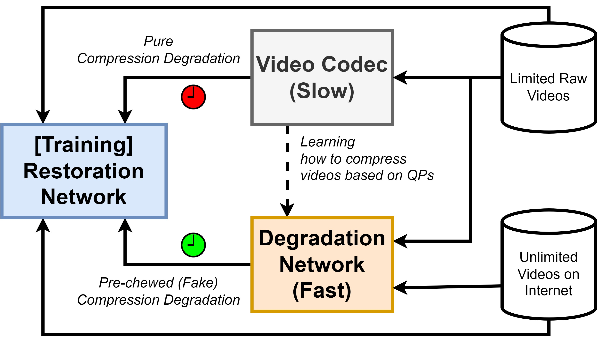
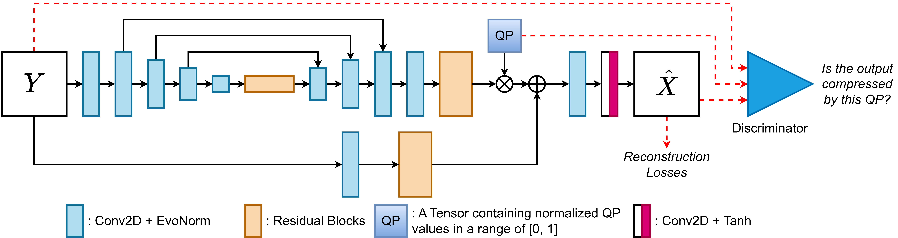

On Pre-chewing Compression Degradation for Learned Video Compression
In IEEE International Conference on Visual Communications and Image Processing (VCIP), 2022 |
|||||||||||||||||||||||||||||||||||||||||||||||||||||||||||||||||||||||||||||||||||||||||||||||||||
AbstractArtificial Intelligence (AI) needs huge amounts of data, and so does Learned Restoration for Video Compression. There are two main problems regarding training data. 1) Preparing training compression degradation using a video codec (e.g., Versatile Video Coding - VVC) costs a considerable resource. Significantly, the more Quantization Parameters (QPs) we compress with, the more coding time and storage are required. 2) The common way of training a newly initialized Restoration Network on pure compression degradation at the beginning is not effective. To solve these problems, we propose a Degradation Network to pre-chew (generalize and learn to synthesize) the real compression degradation, then present a hybrid training scheme that allows a Restoration Network to be trained on unlimited videos without compression. Concretely, we propose a QP-wise Degradation Network to learn how to compress video frames like VVC in real-time and can transform the degradation output between QPs linearly. The real compression degradation is thus pre-chewed as our Degradation Network can synthesize the more generalized degradation for a newly initialized Restoration Network to learn easier. To diversify training video content without compression and avoid overfitting, we design a Training Framework for Semi-Compression Degradation (TF-SCD) to train our model on many fake compressed videos together with real compressed videos. As a result, the Restoration Network can quickly jump to the near-best optimum at the beginning of training, proving our promising scheme of using pre-chewed data for the very first steps of training. In other words, a newly initialized Learned Video Compression can be warmed up efficiently but effectively with our pre-trained Degradation Network. Besides, our proposed TF-SCD can further enhance the restoration performance in a specific range of QPs and provide a better generalization about QPs compared with the common way of training a restoration model. |
|||||||||||||||||||||||||||||||||||||||||||||||||||||||||||||||||||||||||||||||||||||||||||||||||||
Overall Concept
Figure: Our Training Framework for Semi-Compression Degradation.
We train a QP-wise Degradation Network to learn and synthesize compression degradation
for an unlimited number of videos on the Internet. As an advantage,
the Restoration Network can be trained on more video frames without compression,
diversifying training video content and QPs.
 |
|||||||||||||||||||||||||||||||||||||||||||||||||||||||||||||||||||||||||||||||||||||||||||||||||||
Network Architecture |
|||||||||||||||||||||||||||||||||||||||||||||||||||||||||||||||||||||||||||||||||||||||||||||||||||
Ablation study on metrics to learn compression degradation
Table: Ablation study on loss functions such as L1, L2, and LPIPS
for generating compression degradation. The combination of L1 and LPIPS provides the best
performance in PSNR, LPIPS, and MS-SSIM on average as bold.
|
|||||||||||||||||||||||||||||||||||||||||||||||||||||||||||||||||||||||||||||||||||||||||||||||||||
Comparison
Table: Quantitative Comparison on Restoration Performance between DnCNN trained on S-Set
with Real QPs={32,37,42,47} and S-Set with Real QPs={32,37,42,47} combined with U-Set
with Fake QPs={32,35,37,40,42,45,47} on videos from the Internet using PSNR, LPIPS, MS-SSIM.
Our method outperforms the common way in a QP range of [22 .. 51] as highlighted rows.
|
|||||||||||||||||||||||||||||||||||||||||||||||||||||||||||||||||||||||||||||||||||||||||||||||||||
Consider citing our work
@inproceedings{ho2022pre,
|
|||||||||||||||||||||||||||||||||||||||||||||||||||||||||||||||||||||||||||||||||||||||||||||||||||
LicenseThis work (as well as its materials) is for non-commercial uses and research purposes only. |
|||||||||||||||||||||||||||||||||||||||||||||||||||||||||||||||||||||||||||||||||||||||||||||||||||